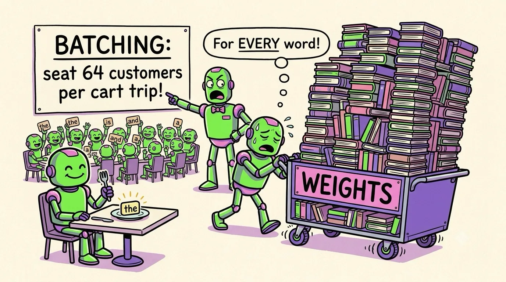

Chapter 08 · The Main Event
GPUs & LLMs: Feeding the Token Machine
You ask an AI assistant a question. Somewhere, a rack of GPUs wakes up. What happens next is the single best application of everything in this book — warps, memory walls, Tensor Cores, arithmetic intensity — so let's trace it end to end. Fair warning: the punchline is not "the GPU does a lot of math." The punchline is that generating text is mostly a memory-moving job, and it changes how the entire AI industry builds hardware.
What an LLM does, mechanically
Strip away the mystique and a large language model is: a stack of giant matrices (the "weights" — for a 70B-parameter model, 70 billion numbers) plus a loop: turn the text so far into vectors, multiply through the stack (~80 layers of attention + feed-forward blocks), get a probability for every possible next token, pick one, append it, repeat. Every word an LLM has ever said to you came out of that loop — one matrix-multiply gauntlet per token.
Two phases, opposite personalities
Serving a request has two phases, and they stress the GPU in opposite ways. This distinction is the key to all modern inference engineering:
- Prefill — reading your prompt. All 500 prompt tokens can be processed at once: a fat batch of matrix work, thousands of rows deep. High arithmetic intensity, Tensor Cores blazing — compute-bound. This phase is why there's a pause before the first word appears.
- Decode — writing the answer. Tokens come out one at a time (each depends on the last — remember JSON parsing from Chapter 2?). To produce ONE token, the GPU must stream all 70 billion weights from HBM through the cores… to do just one multiply-add per weight with them. One op per byte-ish. Chapter 5 told you the break-even is ~300 ops per byte. Decode is hundreds of times below it — memory-bound, catastrophically.
Decode speed ≈ memory bandwidth ÷ model size. A 70B model in 8-bit = 70 GB of weights. On an H100 (3.35 TB/s): 3350 ÷ 70 ≈ 48 tokens/sec, ceiling — regardless of its 2,000 TFLOPS! The math units could go ~300× faster; they're starving. This one equation explains why AI chips race to add memory bandwidth, why models get quantized to 4-bit, and why your local LLM's speed tracks your RAM bandwidth, not your FLOPS.
How the industry fights the memory wall
Every big inference trick you've heard of is an attack on that one equation:
- Batching. If 64 users' requests decode together, the GPU loads the 70 GB of weights once and does 64 tokens' worth of math with it — 64× the arithmetic intensity. Individual latency barely changes; total throughput explodes. This is why AI APIs are cheap and getting cheaper.
- Quantization. Weights in 4-bit instead of 16-bit = 4× fewer bytes to stream = up to ~4× more tokens/sec, from the same silicon. (Chapter 7's FP4 hardware exists precisely for this.)
- The KV cache. Attention lets each new token "look back" at every previous one. Recomputing that would be quadratic madness, so per-token attention data gets cached in GPU memory. Gotcha: it's huge — long chats can eat tens of GB — and it's the main reason long-context conversations are expensive. When a provider "compacts" your chat, they're managing this cache.
- Speculative decoding. A tiny cheap model guesses 5 tokens ahead; the big model verifies all 5 in one batched pass (verification batches like prefill!). Guesses right → 5 tokens for ~1 weight-load.
- FlashAttention. Rewrites attention as a tiled, shared-memory-resident kernel (Chapter 5's whiteboard trick) so the big attention matrix never touches HBM at all.
And training? Opposite world
Training is decode's mirror image: enormous batches (millions of tokens per step), so arithmetic intensity is sky-high and the job is gloriously compute-bound — Tensor Cores at full sprint for months. The catch is scale: a frontier model needs ~10²⁵–10²⁶ FLOPs of training, which is why it's done on tens of thousands of GPUs at once, and why a training cluster costs more than a skyscraper. (How you make 10,000 GPUs act like one computer is Chapter 9.) Memory still bites here too — storing gradients + optimizer state triples the weight memory, hence tricks like sharding them across the fleet.

A funny zine-style cartoon restaurant scene, hand-drawn ink with flat colors (electric green, violet, pink on cream paper): a customer robot has ordered one single tiny word on a plate (a little glowing token labeled "the"). To deliver it, an exhausted waiter robot must push a colossal library cart stacked impossibly high with 70 billion books (labeled "WEIGHTS") past the table — for EVERY word. Behind him, a manager robot points at a sign reading "BATCHING: seat 64 customers per cart trip!" where dozens of happy customers share one giant cart delivery. Exaggerated, playful, no other small text. Target size ~1280×720px, 16:9 landscape; composed for a small on-page figure, subject centred with safe margins — it is letterboxed into a 16:9 box, so keep nothing important near the edges.
Generate this with your image agent, then drop the file here.
Why AI agents multiply all of this
A chatbot answers you once. An agent — the kind that researches, writes code, runs tools, checks its work — loops: think, act, read results, think again. One user task can mean dozens of LLM calls with long, growing contexts (all that tool output lands in the prompt). Agents therefore hammer exactly the expensive parts: prefill (re-reading big contexts) and KV cache (keeping them alive). Multiply by millions of users, and you get the great GPU land-rush of the 2020s: the constraint on AI right now isn't ideas — it's tokens per second per watt, which is to say, it's this chapter.
Don't buy (or rent) GPUs by TFLOPS alone. For chat-style inference, the spec that predicts tokens/sec is memory bandwidth (and having enough VRAM to hold the model + KV cache at all). For training or serving giant batches, FLOPS and interconnect matter more. "Which GPU is best?" always starts with "which roof are you under?"
One GPU, we've established, is not enough — a frontier model doesn't even fit on one. Time to see how GPUs hold hands: NVLink, clusters, and computers the size of buildings.
Sources "LLM Inference Unveiled: Survey and Roofline Model Insights" (arxiv.org/abs/2402.16363) · "Mind the Memory Gap: GPU Bottlenecks in Large-Batch LLM Inference" (arxiv.org/abs/2503.08311) · Dao et al., "FlashAttention" (arxiv.org/abs/2205.14135) · NVIDIA H100 specifications (nvidia.com)